pacman::p_load(readxl, tidyverse, tsibble, fable, fable.prophet, fabletools, feasts, lubridate)Take-home_Ex02 - Fable
Take-home Exercise 2: fable
Data Preparation
Import Packages
Similar to modeltime pipeline, we need to load the necessary packages using pacman::p_load(). The key difference is tidymodels packages are replaced with tidyverts packages (tsibble, fable, fable.prophet, fabletools, and feasts).
Import Data
cpi_data_raw <- read_excel("data/SG_CPI_012020_012026_Use.xlsx")Data Wrangling
Define Hierarchy Map
hier_map <- tribble(
~Category, ~Level, ~Parent,
# Level 1 - Root
"Consumer Price Index (CPI)", 1, NA,
# Level 2 - Major Categories
"CPI: Food", 2, "Consumer Price Index (CPI)",
"CPI: Clothing and Footwear (C&F)", 2, "Consumer Price Index (CPI)",
"CPI: Housing & Utilities", 2, "Consumer Price Index (CPI)",
"CPI: Household Durables & Services (HDS)", 2, "Consumer Price Index (CPI)",
"CPI: Health", 2, "Consumer Price Index (CPI)",
"CPI: Transport", 2, "Consumer Price Index (CPI)",
"CPI: Information & Communication (InfoComm)", 2, "Consumer Price Index (CPI)",
"CPI: Recreation, Sport & Culture (RSC)", 2, "Consumer Price Index (CPI)",
"CPI: Education", 2, "Consumer Price Index (CPI)",
"CPI: Miscellaneous Goods & Services (MG&S)", 2, "Consumer Price Index (CPI)",
# Level 3 - Food sub-categories
"CPI: Food Excl Food & Beverage Serving Services (FFBSS)", 3, "CPI: Food",
"CPI: Food & Beverage Serving Services (FBSS)", 3, "CPI: Food",
# Level 3 - C&F children
"CPI: C&F: Clothing", 3, "CPI: Clothing and Footwear (C&F)",
"CPI: C&F: Footwear", 3, "CPI: Clothing and Footwear (C&F)",
# Level 3 - Housing & Utilities children
"CPI: Housing & Utilities: Accommodation", 3, "CPI: Housing & Utilities",
"CPI: Housing & Utilities: Utilities & Other Fuels", 3, "CPI: Housing & Utilities",
# Level 3 - HDS children
"CPI: HDS: Furniture & Furnishings", 3, "CPI: Household Durables & Services (HDS)",
"CPI: HDS: Household Textiles", 3, "CPI: Household Durables & Services (HDS)",
"CPI: HDS: Household Appliances", 3, "CPI: Household Durables & Services (HDS)",
"CPI: HDS: Glassware, Tableware & Household Utensils", 3, "CPI: Household Durables & Services (HDS)",
"CPI: HDS: Tools & Equipment For House & Garden", 3, "CPI: Household Durables & Services (HDS)",
"CPI: HDS: Household Services & Supplies (HSS)", 3, "CPI: Household Durables & Services (HDS)",
# Level 3 - Health children
"CPI: Health: Medicines & Health Products", 3, "CPI: Health",
"CPI: Health: Outpatient Services", 3, "CPI: Health",
"CPI: Health: Inpatient Services", 3, "CPI: Health",
"CPI: Health: Other Health Services (OHS)", 3, "CPI: Health",
"CPI: Health: Health Insurance", 3, "CPI: Health",
# Level 3 - Transport children
"CPI: Transport: Private Transport", 3, "CPI: Transport",
"CPI: Transport: Land Transport Services", 3, "CPI: Transport",
"CPI: Transport: Other Transport Services", 3, "CPI: Transport",
"CPI: Transport: Transport Services Of Goods", 3, "CPI: Transport",
# Level 3 - InfoComm children
"CPI: InfoComm: Information & Communication Equipment", 3, "CPI: Information & Communication (InfoComm)",
"CPI: InfoComm: Software Excl Games", 3, "CPI: Information & Communication (InfoComm)",
"CPI: InfoComm: InfoComm Services", 3, "CPI: Information & Communication (InfoComm)",
# Level 3 - RSC children
"CPI: RSC: Recreational & Cultural Goods", 3, "CPI: Recreation, Sport & Culture (RSC)",
"CPI: RSC: Other Recreational Goods (ORG)", 3, "CPI: Recreation, Sport & Culture (RSC)",
"CPI: RSC: Garden Products & Pets", 3, "CPI: Recreation, Sport & Culture (RSC)",
"CPI: RSC: Recreational Services", 3, "CPI: Recreation, Sport & Culture (RSC)",
"CPI: RSC: Cultural Services", 3, "CPI: Recreation, Sport & Culture (RSC)",
"CPI: RSC: Newspapers, Books & Stationery (NBS)", 3, "CPI: Recreation, Sport & Culture (RSC)",
"CPI: RSC: Holiday Expenses", 3, "CPI: Recreation, Sport & Culture (RSC)",
# Level 3 - Education children
"CPI: Education: General, Vocational & Higher Education (GVH Edu)", 3, "CPI: Education",
"CPI: Education: Private Tuition & Other Educational Courses", 3, "CPI: Education",
"CPI: Education: School Textbooks & Study Guides", 3, "CPI: Education",
# Level 3 - MG&S children
"CPI: MG&S: Personal Care", 3, "CPI: Miscellaneous Goods & Services (MG&S)",
"CPI: MG&S: Alcoholic Drinks & Tobacco", 3, "CPI: Miscellaneous Goods & Services (MG&S)",
"CPI: MG&S: Personal Effects", 3, "CPI: Miscellaneous Goods & Services (MG&S)",
"CPI: MG&S: Social Services", 3, "CPI: Miscellaneous Goods & Services (MG&S)",
"CPI: MG&S: Other Miscellaneous Services", 3, "CPI: Miscellaneous Goods & Services (MG&S)",
# Level 4 - FFBSS children (deepest level)
"CPI: FFBSS: Rice & Cereals", 4, "CPI: Food Excl Food & Beverage Serving Services (FFBSS)",
"CPI: FFBSS: Meat", 4, "CPI: Food Excl Food & Beverage Serving Services (FFBSS)",
"CPI: FFBSS: Fish & Seafood", 4, "CPI: Food Excl Food & Beverage Serving Services (FFBSS)",
"CPI: FFBSS: Milk, Other Dairy & Eggs", 4, "CPI: Food Excl Food & Beverage Serving Services (FFBSS)",
"CPI: FFBSS: Oils & Fats", 4, "CPI: Food Excl Food & Beverage Serving Services (FFBSS)",
"CPI: FFBSS: Fruits & Nuts (FN)", 4, "CPI: Food Excl Food & Beverage Serving Services (FFBSS)",
"CPI: FFBSS: Vegetables", 4, "CPI: Food Excl Food & Beverage Serving Services (FFBSS)",
"CPI: FFBSS: Sugar, Confectionery & Desserts (SCD)", 4, "CPI: Food Excl Food & Beverage Serving Services (FFBSS)",
"CPI: FFBSS: Ready-Made & Oth. Food Nec", 4, "CPI: Food Excl Food & Beverage Serving Services (FFBSS)",
"CPI: FFBSS: Non-Alcoholic Beverages", 4, "CPI: Food Excl Food & Beverage Serving Services (FFBSS)",
# Level 4 - FBSS children (deepest level)
"CPI: FBSS: Restaurants, Cafes & Pubs", 4, "CPI: Food & Beverage Serving Services (FBSS)",
"CPI: FBSS: Fast Food", 4, "CPI: Food & Beverage Serving Services (FBSS)",
"CPI: FBSS: Hawker Food Incl. Food Courts (HF&FC)", 4, "CPI: Food & Beverage Serving Services (FBSS)",
"CPI: FBSS: Oth Catering Services, Incl Vending Machines", 4, "CPI: Food & Beverage Serving Services (FBSS)"
)Reshape Data to Long
cpi_data_long <- cpi_data_raw %>%
pivot_longer(
cols = -Date,
names_to = "Category",
values_to = "CPI_Value"
) %>%
mutate(Date = floor_date(as.Date(Date), "month")) %>%
left_join(hier_map, by = "Category")Identify Leaf Nodes
leaf_categories <- hier_map %>%
filter(!Category %in% na.omit(hier_map$Parent)) %>%
pull(Category)Filter to Leaf Nodes
While modeltime uses pad_by_time() to fill time gaps, fable uses fill_gaps() on a tsibble object.
Another difference is that an additional step of defining mutate(Date = yearmonth(Date)) is needed to convert date column into tsibble native monthly index type to explicitly tell tsibble that the data is monthly.
cpi_tsibble <- cpi_data_raw %>%
pivot_longer(
cols = -Date,
names_to = "Category",
values_to = "CPI_Value"
) %>%
mutate(Date = floor_date(as.Date(Date), "month")) %>%
left_join(hier_map, by = "Category") %>%
filter(Category %in% leaf_categories) %>%
select(Date, Category, CPI_Value) %>%
mutate(Date = yearmonth(Date)) %>% # convert AFTER floor_date, so tsibble knows it's monthly
as_tsibble(key = Category, index = Date) %>%
fill_gaps() %>%
group_by_key() %>%
mutate(CPI_Value = zoo::na.approx(CPI_Value, na.rm = FALSE)) %>%
ungroup()Missingness Check
cpi_tsibble %>% filter(is.na(CPI_Value))# A tsibble: 0 x 3 [?]
# Key: Category [0]
# ℹ 3 variables: Date <mth>, Category <chr>, CPI_Value <dbl>Time Series Forecasting
Train-test Split
Similar to modeltime, the last 12 months are reserved as a hold-out period (test set). The key difference is that instead of using split_nested_timeseries(), filter() is used. Since Date is a yearmonth object, we can do direct integer subtraction instead of using lubridate %m-%, which is incompatible with yearmonth.
cutoff_date <- max(cpi_tsibble$Date) - 12
train_tbl <- cpi_tsibble %>% filter(Date <= cutoff_date)
test_tbl <- cpi_tsibble %>% filter(Date > cutoff_date)Fit models on Train Set
While the modeltime pipeline requires us to explicitly define workflow pairings for each model with preprocessing recipe, fable’s model() function is more straight forward.
All three models (ETS, ARIMA, Prophet) are fitted across all 51 leaf categories in a single cell. This is possible because tsibble’s key variable is capable to handle multi-series structure, eliminating the need for nest_timeseries() and modeltime_nested_fit().
However, ARIMA-XGBoost is not available in fable.
fit_train <- train_tbl %>%
model(
ets = ETS(CPI_Value),
arima = ARIMA(CPI_Value),
prophet = prophet(CPI_Value)
)Select the Best Model
Simliar to modeltime_nested_select_best(), the best model per category is selected by minimising RMSE on the test set.
However, fable does not have built-in function that is similar to modeltime_nested_select_best(). Hence, this is done manually by computing accuracy metrics with accuracy(), using slice_min(RMSE) and semi_join() to identify and retain the best model for each category.
acc_tbl <- fit_train %>%
forecast(h = 12) %>%
accuracy(cpi_tsibble)
best_model <- acc_tbl %>%
group_by(Category) %>%
slice_min(RMSE, n = 1) %>%
ungroup() %>%
select(Category, .model)Refit on Full Dataset
fit_full <- cpi_tsibble %>%
model(
ets = ETS(CPI_Value),
arima = ARIMA(CPI_Value),
prophet = prophet(CPI_Value)
)Generate 12-month Forecast
leaf_fc <- fit_full %>%
forecast(h = 12) %>%
semi_join(best_model, by = c("Category", ".model")) %>%
as_tibble() %>%
mutate(Date = as.Date(Date)) %>%
select(Date, Category, .value = .mean)Define Weights
weights_tbl <- tribble(
~Category, ~Weight,
# Level 4 - FFBSS leaf nodes
"CPI: FFBSS: Rice & Cereals", 122,
"CPI: FFBSS: Meat", 101,
"CPI: FFBSS: Fish & Seafood", 79,
"CPI: FFBSS: Milk, Other Dairy & Eggs", 64,
"CPI: FFBSS: Oils & Fats", 12,
"CPI: FFBSS: Fruits & Nuts (FN)", 79,
"CPI: FFBSS: Vegetables", 82,
"CPI: FFBSS: Sugar, Confectionery & Desserts (SCD)", 27,
"CPI: FFBSS: Ready-Made & Oth. Food Nec", 44,
"CPI: FFBSS: Non-Alcoholic Beverages", 41,
# Level 4 - FBSS leaf nodes
"CPI: FBSS: Restaurants, Cafes & Pubs", 585,
"CPI: FBSS: Fast Food", 85,
"CPI: FBSS: Hawker Food Incl. Food Courts (HF&FC)", 707,
"CPI: FBSS: Oth Catering Services, Incl Vending Machines", 14,
# Level 3 - leaf nodes for all other branches
"CPI: C&F: Clothing", 129,
"CPI: C&F: Footwear", 36,
"CPI: Housing & Utilities: Accommodation", 2656,
"CPI: Housing & Utilities: Utilities & Other Fuels", 282,
"CPI: HDS: Furniture & Furnishings", 128,
"CPI: HDS: Household Textiles", 17,
"CPI: HDS: Household Appliances", 101,
"CPI: HDS: Glassware, Tableware & Household Utensils", 17,
"CPI: HDS: Tools & Equipment For House & Garden", 5,
"CPI: HDS: Household Services & Supplies (HSS)", 279,
"CPI: Health: Medicines & Health Products", 94,
"CPI: Health: Outpatient Services", 428,
"CPI: Health: Inpatient Services", 238,
"CPI: Health: Other Health Services (OHS)", 23,
"CPI: Health: Health Insurance", 225,
"CPI: Transport: Private Transport", 906,
"CPI: Transport: Land Transport Services", 262,
"CPI: Transport: Other Transport Services", 131,
"CPI: Transport: Transport Services Of Goods", 8,
"CPI: InfoComm: Information & Communication Equipment", 91,
"CPI: InfoComm: Software Excl Games", 3,
"CPI: InfoComm: InfoComm Services", 287,
"CPI: RSC: Recreational & Cultural Goods", 9,
"CPI: RSC: Other Recreational Goods (ORG)", 33,
"CPI: RSC: Garden Products & Pets", 27,
"CPI: RSC: Recreational Services", 144,
"CPI: RSC: Cultural Services", 52,
"CPI: RSC: Newspapers, Books & Stationery (NBS)", 20,
"CPI: RSC: Holiday Expenses", 310,
"CPI: Education: General, Vocational & Higher Education (GVH Edu)", 391,
"CPI: Education: Private Tuition & Other Educational Courses", 184,
"CPI: Education: School Textbooks & Study Guides", 4,
"CPI: MG&S: Personal Care", 211,
"CPI: MG&S: Alcoholic Drinks & Tobacco", 58,
"CPI: MG&S: Personal Effects", 62,
"CPI: MG&S: Social Services", 32,
"CPI: MG&S: Other Miscellaneous Services", 75
)Aggregate Forecast
aggregate_bottom_up <- function(forecasts, hier_map, weights_tbl) {
all_levels <- forecasts %>%
left_join(weights_tbl, by = "Category")
levels_to_agg <- hier_map %>%
filter(!is.na(Parent)) %>%
arrange(desc(Level)) %>%
pull(Level) %>%
unique()
for (lvl in levels_to_agg) {
child_nodes <- hier_map %>%
filter(Level == lvl) %>%
select(Category, Parent)
parent_fc <- all_levels %>%
inner_join(child_nodes, by = "Category") %>%
group_by(Date, Category = Parent) %>%
summarise(
.value = sum(.value * Weight) / sum(Weight),
Weight = sum(Weight),
.groups = "drop"
)
all_levels <- bind_rows(all_levels, parent_fc) %>%
distinct(Date, Category, .keep_all = TRUE)
}
return(all_levels)
}
reconciled_forecasts <- aggregate_bottom_up(leaf_fc, hier_map, weights_tbl)Visualisation of Actual and Forecasted CPI
Plot by CPI Level
actuals <- cpi_data_long %>%
select(Date, Category, CPI_Value) %>%
mutate(.key = "Actual")
forecasts_plot <- reconciled_forecasts %>%
select(Date, Category, CPI_Value = .value) %>%
mutate(.key = "Forecast")
# Plot by hierarchy level
plot_by_level <- function(lvl) {
cats <- hier_map %>% filter(Level == lvl) %>% pull(Category)
bind_rows(actuals, forecasts_plot) %>%
filter(Category %in% cats) %>%
ggplot(aes(x = Date, y = CPI_Value, color = .key, linetype = .key)) +
geom_line(linewidth = 0.7) +
scale_color_manual(values = c("Actual" = "#378ADD", "Forecast" = "#EF9F27")) +
scale_linetype_manual(values = c("Actual" = "solid", "Forecast" = "dashed")) +
facet_wrap(~ Category, scales = "free_y", ncol = 3) +
labs(title = paste("Singapore CPI — Level", lvl, "| Actual vs Forecast"),
x = NULL, y = "CPI Value", color = NULL, linetype = NULL) +
theme_minimal(base_size = 11) +
theme(
strip.text = element_text(size = 9, face = "bold"),
axis.text.x = element_text(angle = 45, hjust = 1),
panel.grid.minor = element_blank(),
legend.position = "bottom"
)
}
plot_by_level(1)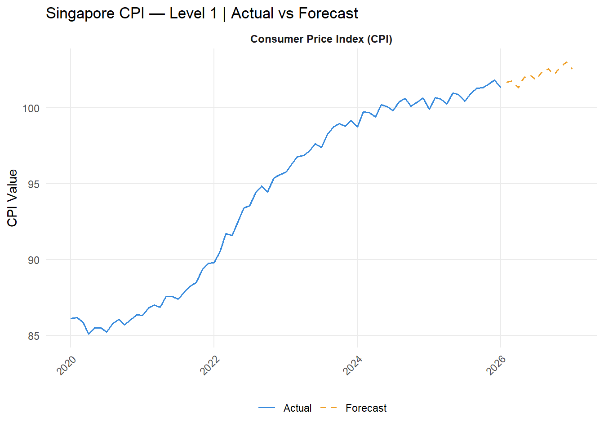
plot_by_level(2)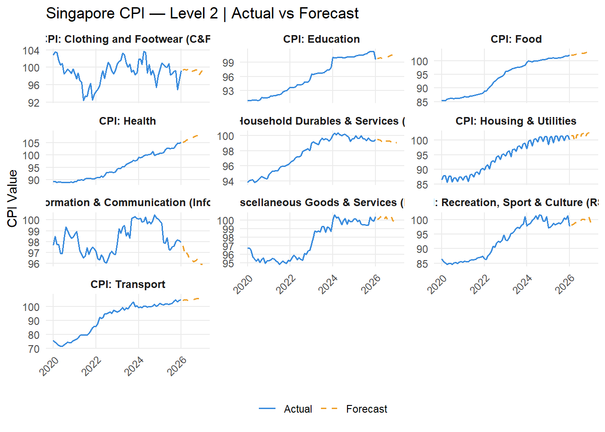
plot_by_level(3)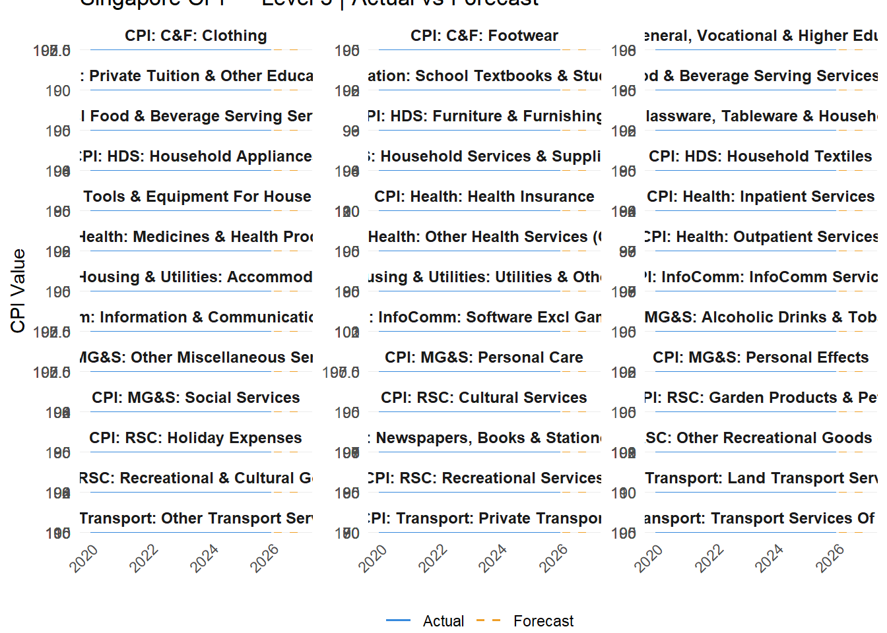
plot_by_level(4)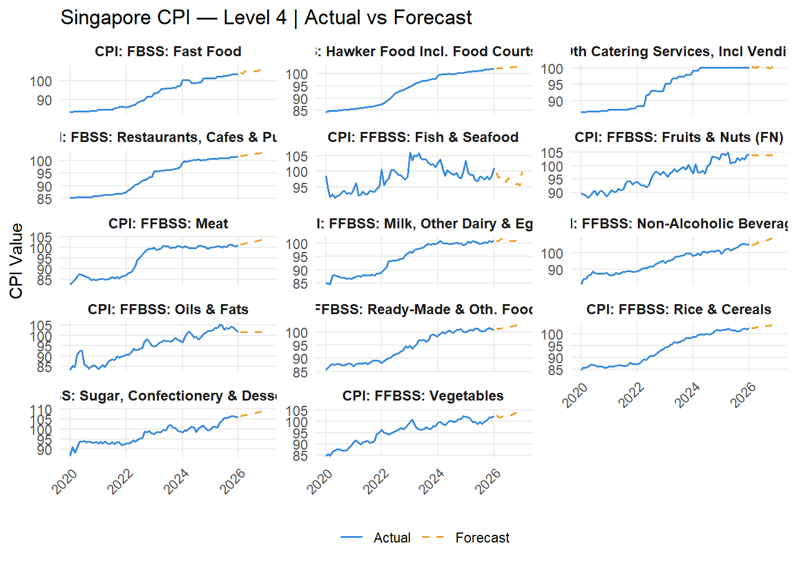
Plot by Parent Node
plot_by_parent <- function(parent_cat) {
cats <- hier_map %>% filter(Parent == parent_cat) %>% pull(Category)
n <- length(cats)
bind_rows(actuals, forecasts_plot) %>%
filter(Category %in% cats) %>%
ggplot(aes(x = Date, y = CPI_Value, color = .key, linetype = .key)) +
geom_line(linewidth = 0.7) +
scale_color_manual(values = c("Actual" = "#378ADD", "Forecast" = "#EF9F27")) +
scale_linetype_manual(values = c("Actual" = "solid", "Forecast" = "dashed")) +
facet_wrap(~ Category, scales = "free_y", ncol = min(3, n)) +
labs(
title = paste("Sub-categories of:", parent_cat),
subtitle = "Actual vs Forecast",
x = NULL, y = "CPI Value", color = NULL, linetype = NULL
) +
theme_minimal(base_size = 11) +
theme(
strip.text = element_text(size = 9, face = "bold"),
axis.text.x = element_text(angle = 45, hjust = 1),
panel.grid.minor = element_blank(),
legend.position = "bottom"
)
}
level2_parents <- hier_map %>% filter(Level == 2) %>% pull(Category)
walk(level2_parents, ~ print(plot_by_parent(.x)))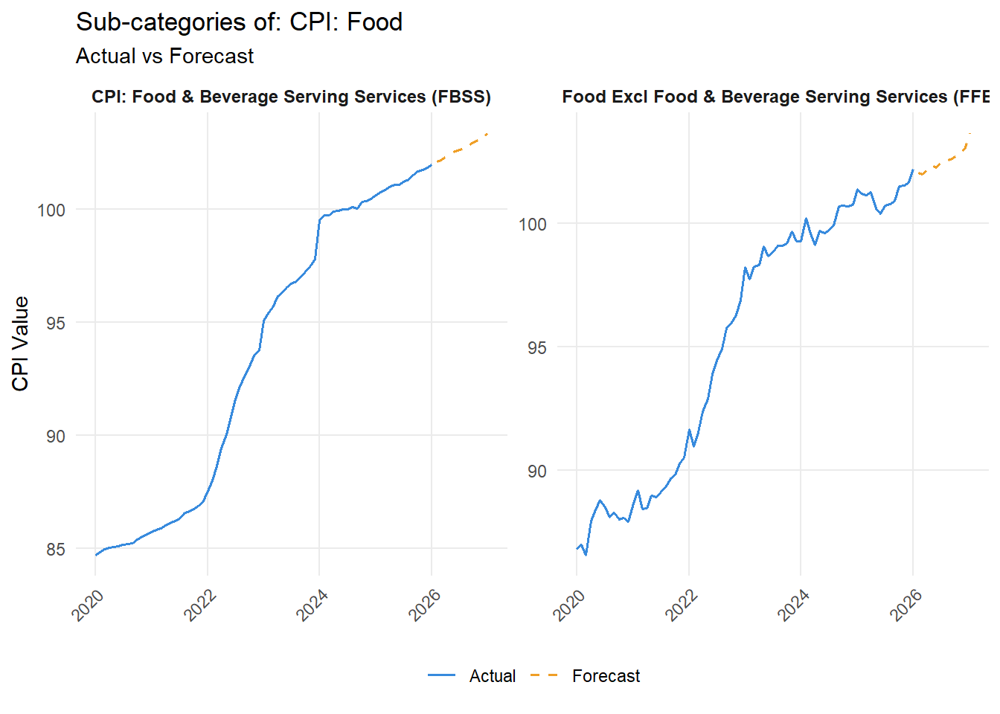
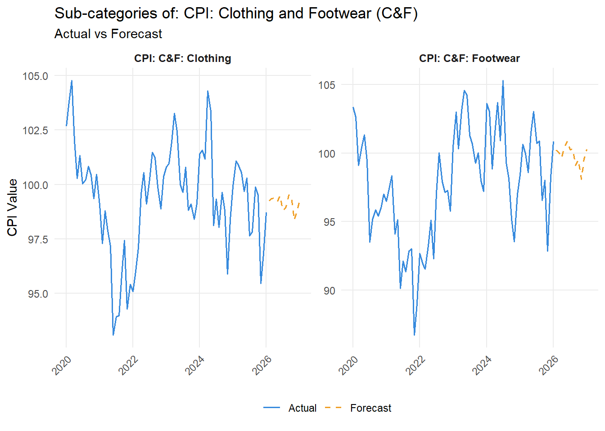

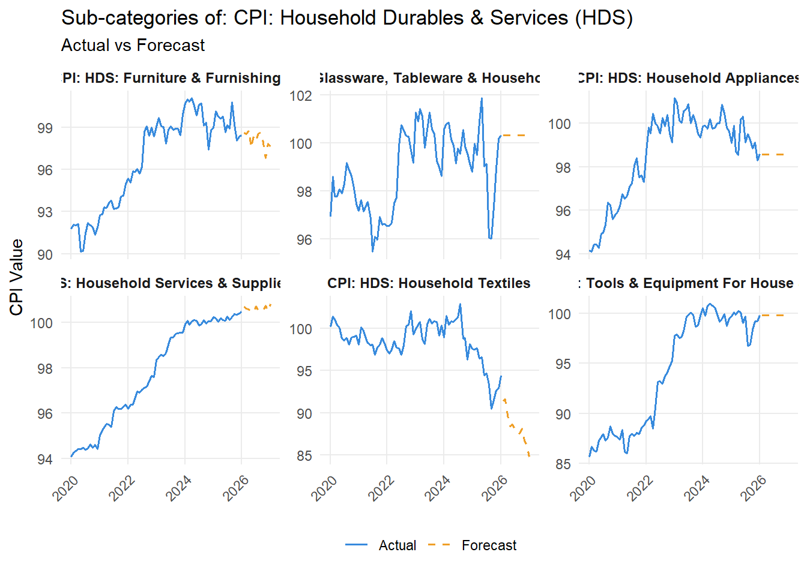
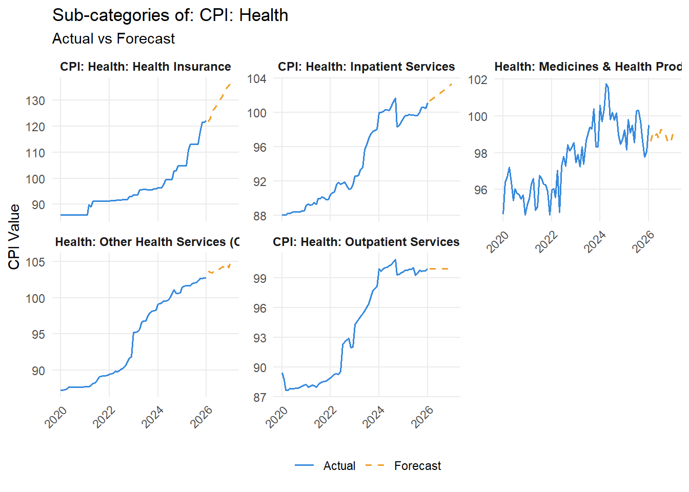
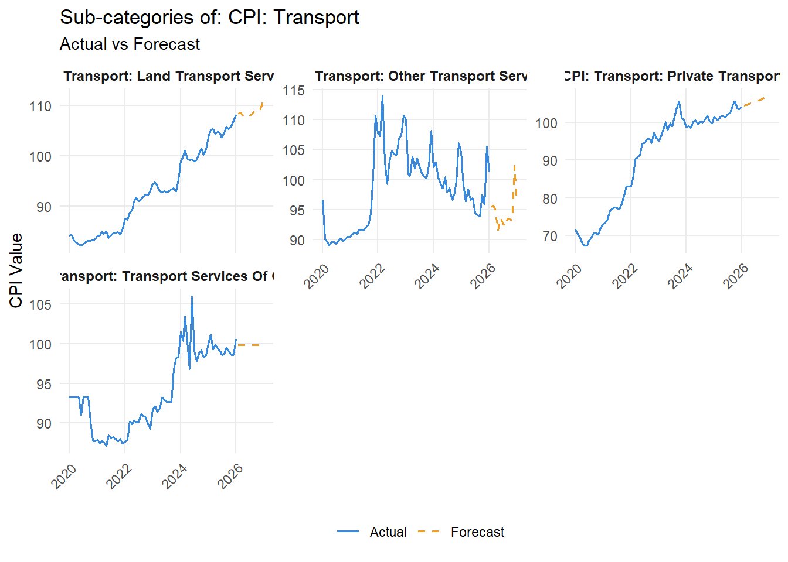
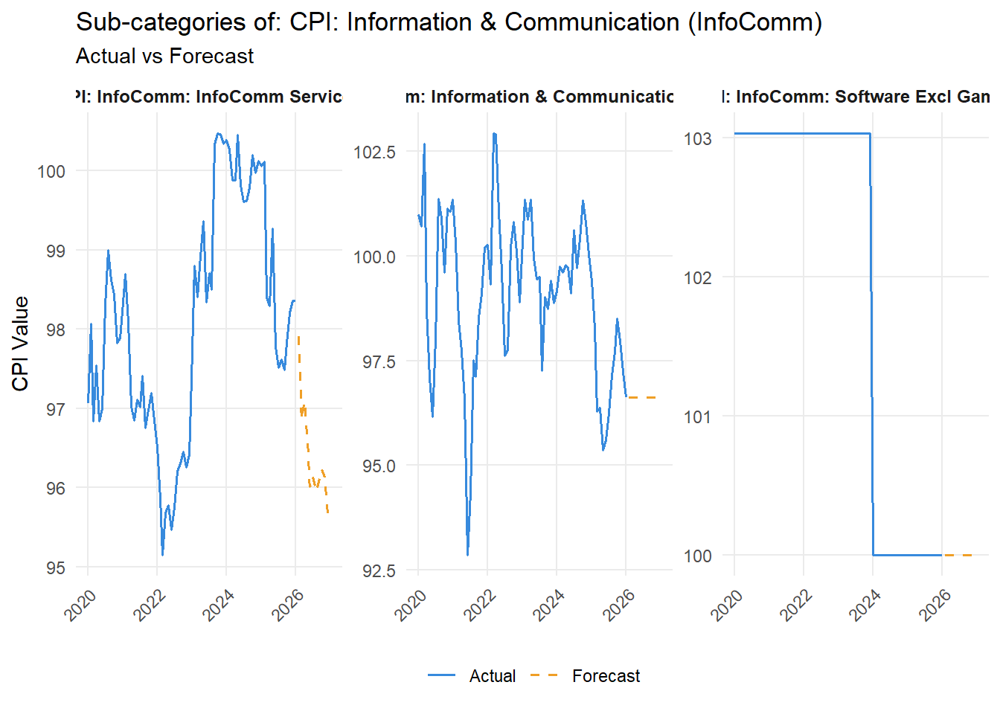
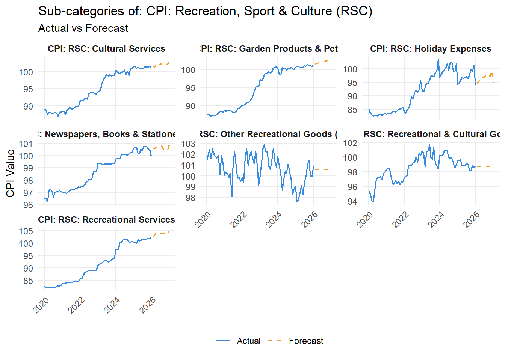
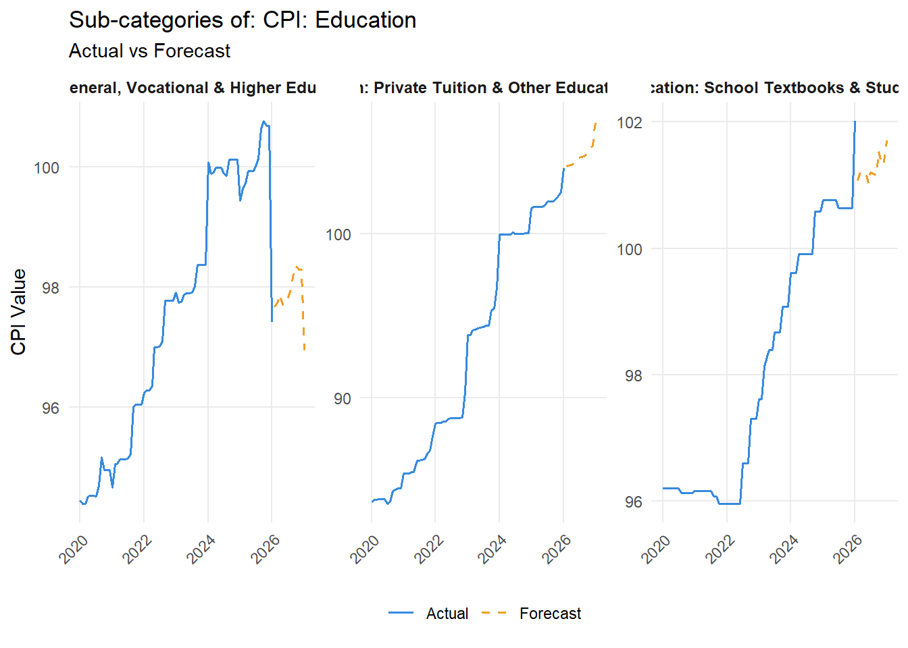
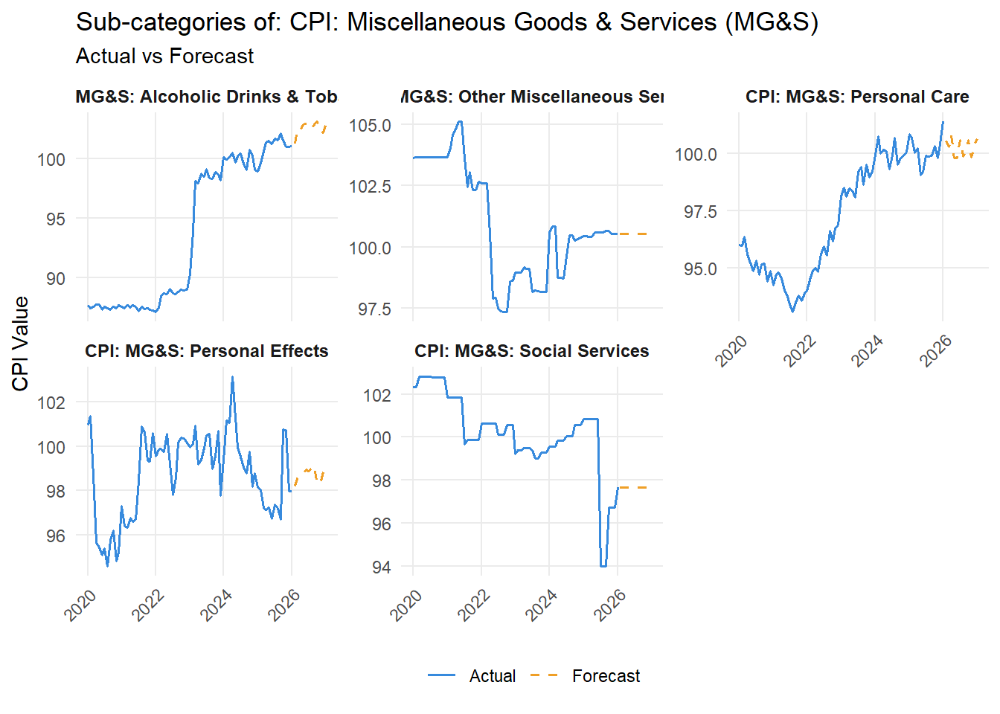
Saving Model Metrics for Comparison
# Save fable accuracy and time
accuracy_fable <- fit_train %>%
forecast(h = 12) %>%
accuracy(cpi_tsibble) %>%
semi_join(best_model, by = c("Category", ".model")) %>%
select(Category, .model, RMSE, MAE, MAPE) %>%
mutate(framework = "fable")
time_fable <- system.time({
train_tbl %>%
model(
ets = ETS(CPI_Value),
arima = ARIMA(CPI_Value),
prophet = prophet(CPI_Value)
)
})
saveRDS(accuracy_fable, "data/accuracy_fable.rds")
saveRDS(time_fable, "data/time_fable.rds")